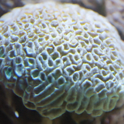
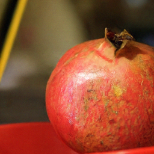
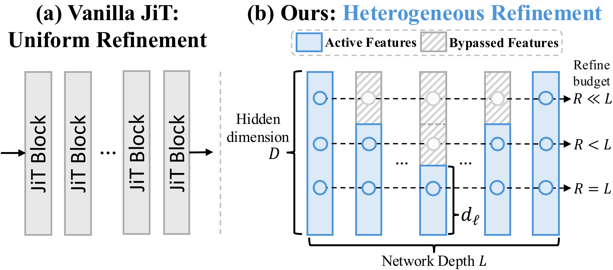
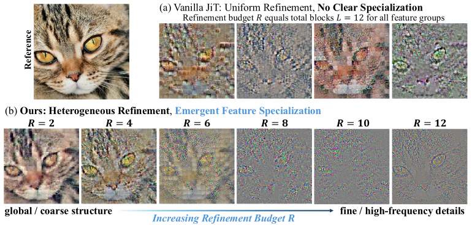
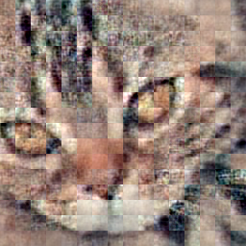
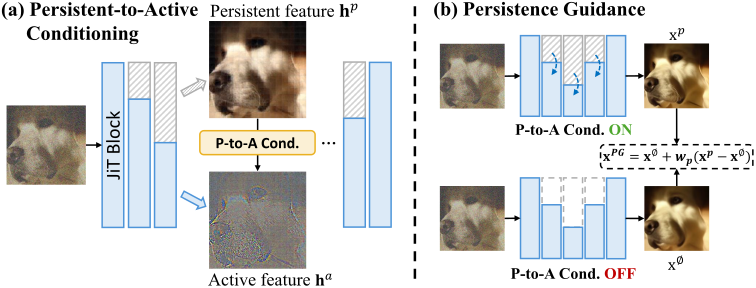
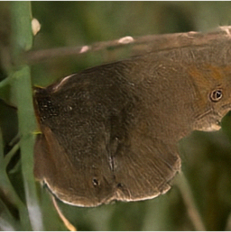
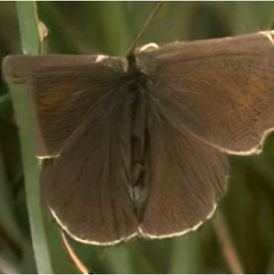

Persistence Forcing
Exploiting Feature Specialization
in Pixel-Space Diffusion
Some features preserve the big picture.
Others refine the details. Let them work together.


PerF studies how heterogeneous refinement in pixel-space diffusion Transformers separates persistent features for global structure from active features for fine details. Persistent-to-Active Conditioning and Persistence Guidance use this specialization to improve class-conditional ImageNet generation.
Different refinement histories.
An ordered feature specialization.
What happens when hidden features are not all updated equally? Varying Transformer width across depth reveals an ordered specialization: sparsely refined features preserve global structure, while frequently refined features contribute finer, higher-frequency details.


EXPLORE THE FEATURE CONTRIBUTIONS
From structure to detail
Each image is one feature group's contribution to the final RGB prediction—not an intermediate denoising step.
Limited refinement preserves coherent global visual structure.

Preserve structure.
Condition active refinement.
Persistence Forcing turns preserved features into useful context. Persistent features bypass a block's transformation and provide spatially aligned, token-wise conditioning for the features that remain active.
Persistent features
Receive fewer updates and retain coherent global visual structure.
Active features
Continue to evolve, using persistent context to refine finer visual details.

A lightweight interaction. A low-rank projection adds persistent context to the usual timestep and class modulation.
Within a single backbone. The feature roles emerge from heterogeneous refinement rather than being explicitly assigned.
An internal structural signal.
A complement to CFG.
Compare predictions with and without persistent conditioning. Their difference defines a guidance direction that strengthens the influence of the model's own structural context.


Same initial noise and class condition. In this example, PG reinforces global structural organization, while CFG strengthens semantic appearance. Their combination preserves both effects.
CFGExternally specified
semantic conditioning
PGInternally formed
structural conditioning
Better generation,
across scales and resolutions.
PerF improves the corresponding JiT baselines on class-conditional ImageNet generation.
| Model | Parameters | FID ↓ | IS ↑ |
|---|---|---|---|
| JiT-B/16 | 131M | 3.66 | 275.1 |
| PerF-B/16 Ours | 137M | 2.81 | 288.3 |
| JiT-L/16 | 459M | 2.36 | 298.5 |
| PerF-L/16 Ours | 471M | 1.91 | 311.2 |
| JiT-H/16 | 953M | 1.86 | 303.4 |
| PerF-H/16 Ours | 987M | 1.63 | 324.5 |
If you find PerF is useful in your research or applications, please consider giving us a star ⭐ and citing it by the following BibTeX entry.
@misc{wang2026persistenceforcing,
title={Persistence Forcing: Exploiting Feature Specialization in Pixel-Space Diffusion},
author={Chong Wang and Zixuan Fu and Shiqi Huang and Siyuan Yang and Hao Cheng and Bihan Wen},
year={2026},
eprint={2609.36014},
archivePrefix={arXiv},
primaryClass={cs.CV},
doi={10.48550/arXiv.2609.36014},
url={https://arxiv.org/abs/2609.36014}
}